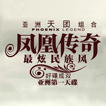

-
Adele
用心灵去诠释那些触碰到就会心碎的回忆
用心灵去诠释那些触碰到就会心碎的回忆，瞬间的认同感征服了大众。这也许就是《someone like you》这首歌被大众所传唱的最主要原因。点击查看详情
-
the beatles
有一首神曲，已诞生了半个世纪......
有一首神曲，已诞生了半个世纪，却依然在今年的7月份被数万人唱响在伦敦的夜晚。带头唱响这 首神曲的正是披头士成员保罗.麦科特尼......点击查看详情
-
凤凰传奇
《最炫民族风》大街小巷，广场公园无处不在的唱着跳着
《最炫民族风》成了孩子们的狂欢曲，青年们的私会曲，壮年们的健身曲，老年们的夕阳曲。连续五场演唱会百分百上座率的票房“神话”.....点击查看详情
